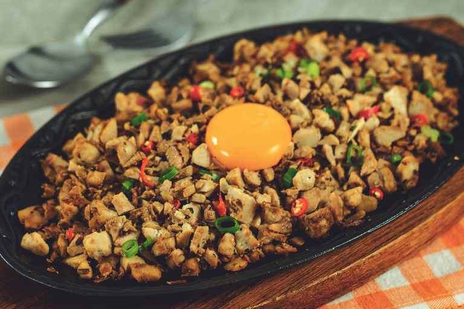

Sizzling Sisig

The traditional and delicious Bulalo
Sizzling Sisig makes a great party appetizer as well as a hearty dinner entree. A delicious combination of juicy pork and tangy, savory, and spicy flavors, it’s seriously addictive!
Ingredients
- 2 pounds pig face (snouts, ears, and jowls)
- 1 cup vinegar
- 1/4 cup soy sauce
- 1 head garlic, peeled and crushed
- 1 teaspoon whole peppercorns
- 2 bay leaves
- 1 tablespoon salt
- water
- 1 large onion, peeled and diced
- 6 Thai chili peppers, stemmed and minced
- 1/2 cup calamansi juice
- 1 tablespoon Liquid seasoning (I used Maggi)
- 1/2 cup liver spread
- pepper to taste
Recipe instructions
- In a large pot, combine pig face, vinegar, soy sauce, garlic, peppercorns, bay leaves, about 1 tablespoon salt, and enough water to completely cover pork.
- Bring to a boil, skimming scum that floats on top. Lower heat, cover, and simmer for about 50 minutes to 1 hour or until meat is tender. Remove from heat and drain well, discarding liquid.
- Over a hot grill, grill pork for about 7 to 10 minutes on each side or until crisp and slightly charred. Or arrange in a single layer on a baking sheet and broil in a 450 F oven for about 4 to 5 minutes or until nicely charred.
- Remove from heat, allow to cool to touch, and chop meat.
- In a large bowl, combine chopped meat, onions, chili peppers, calamansi juice., and liquid seasoning.
- And liver spread and gently stir to combine. Season with salt and pepper to taste.
- To serve, transfer to sizzling hot plates.
Return to top
BACK